规定初始像素覆盖已通过独立数据验收，完整12步与物理安全未通过。Prescribed initial pixel coverage passes the independent DATA audit; full12-step and physical acceptance remain incomplete. Original1280×720; no edits/crop. Every image below is INITIAL, not micro1/final.
{"seed": 2, "proposal_id": 2442, "global_id": 24970, "family": 2}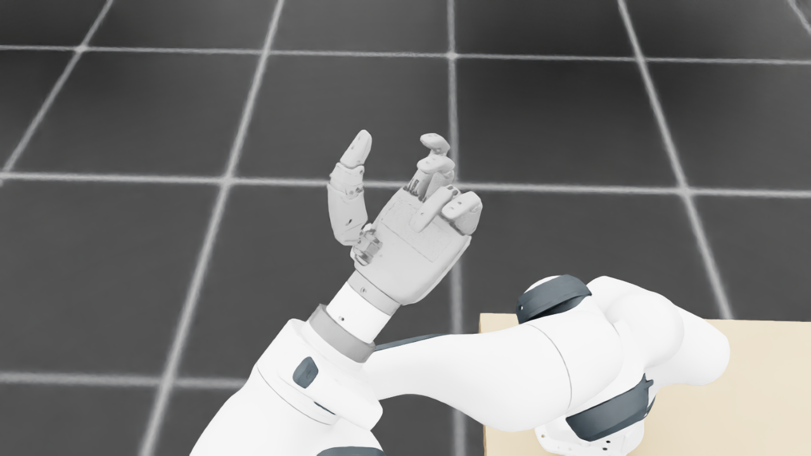
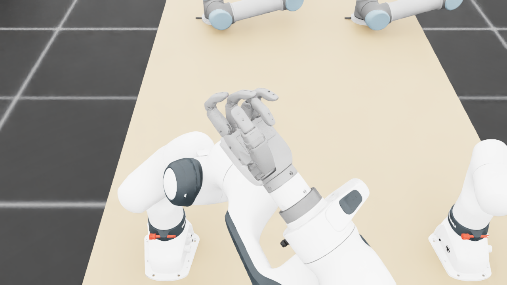
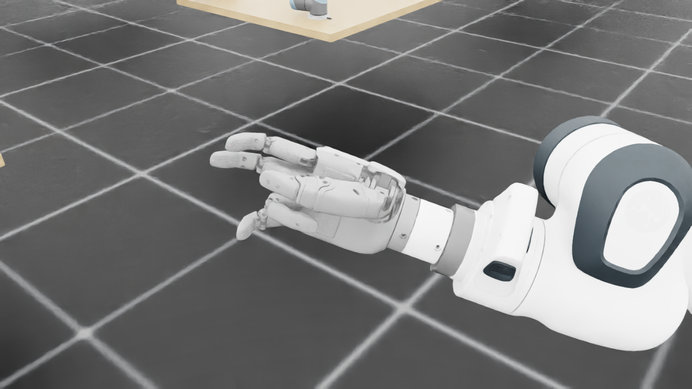
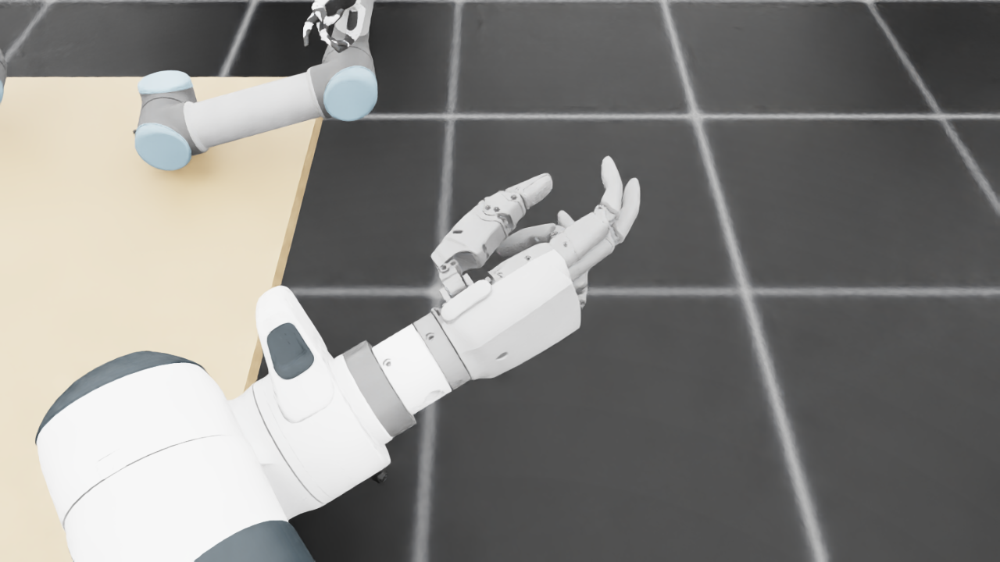
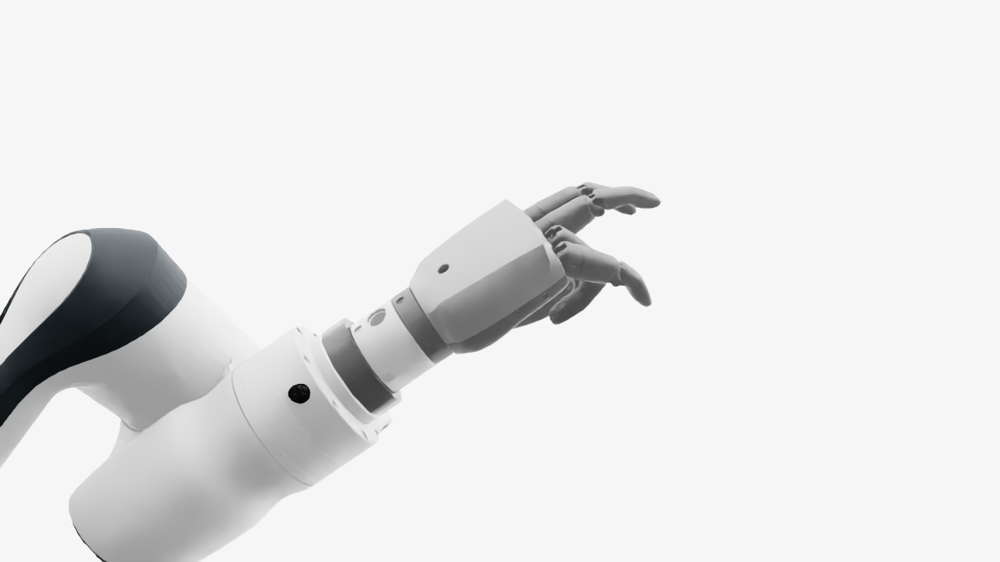
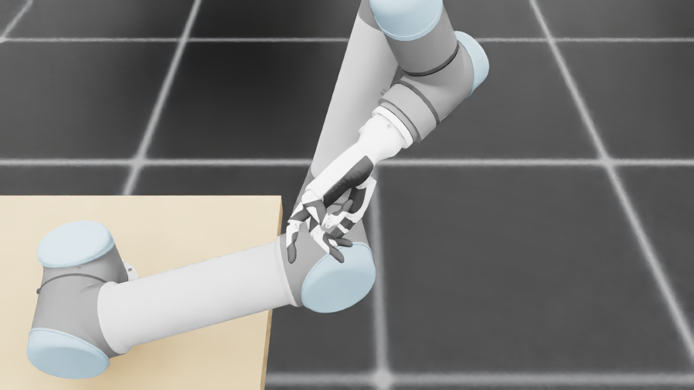
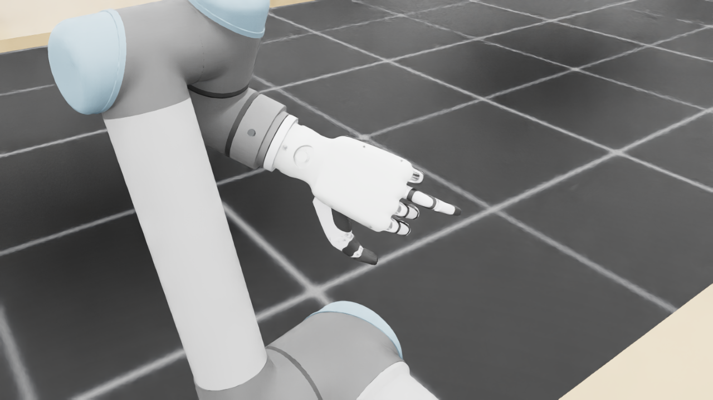
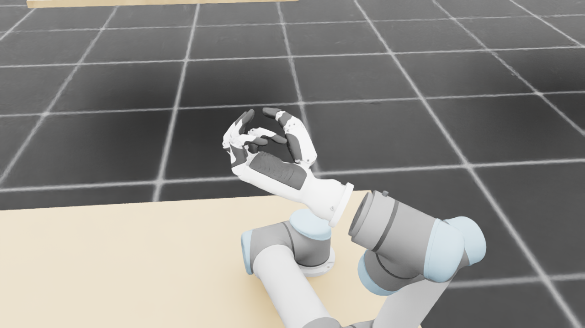
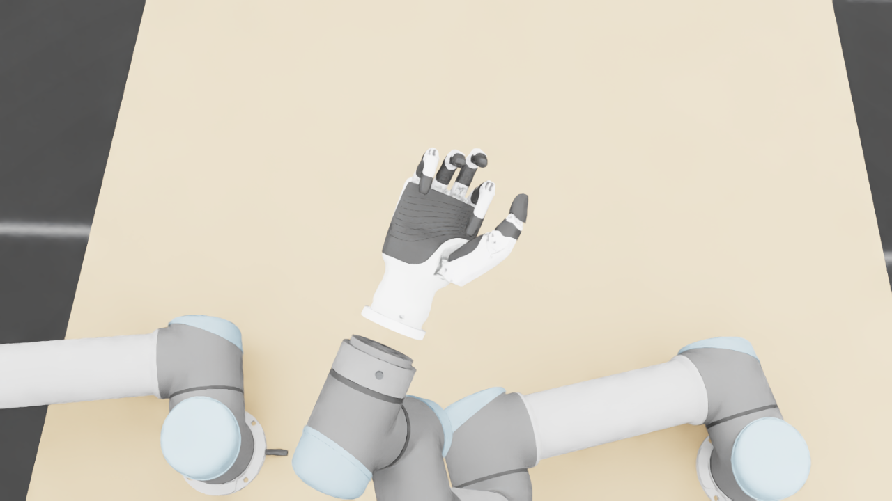
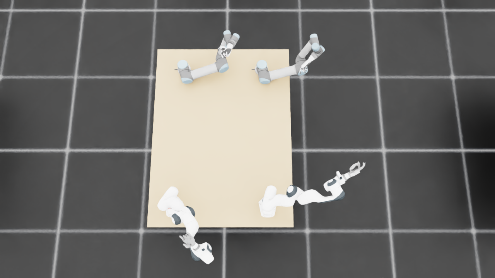
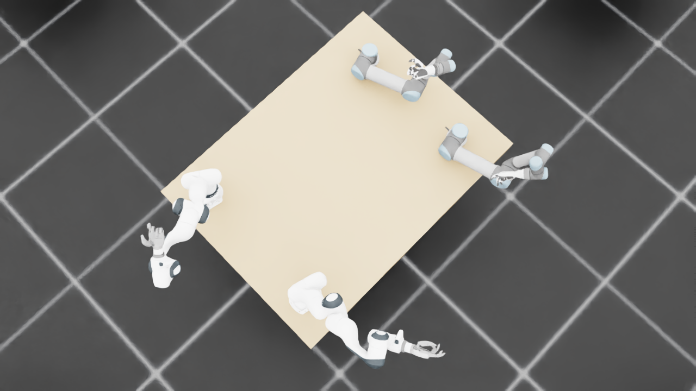
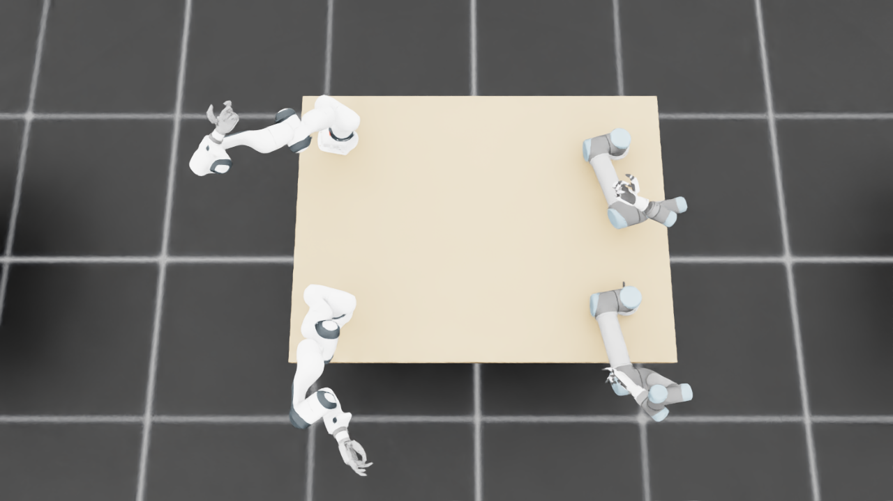
{
"qualified": true,
"arms": {
"F_L": {
"qualified": true,
"palm_visual_peak_pixels": 24633,
"finger_family_peak_pixels": {
"thumb": 8926,
"index": 4881,
"middle": 2870,
"ring": 3104,
"little": 2850
},
"per_native_body_peak_pixels": {
"/World/envs/env_21/F_L/f2_hand/left_hand_base": 30467,
"/World/envs/env_21/F_L/f2_hand/left_index_1": 3120,
"/World/envs/env_21/F_L/f2_hand/left_middle_1": 1143,
"/World/envs/env_21/F_L/f2_hand/left_pinky_1": 1214,
"/World/envs/env_21/F_L/f2_hand/left_ring_1": 880,
"/World/envs/env_21/F_L/f2_hand/left_thumb_1": 765,
"/World/envs/env_21/F_L/f2_hand/left_index_2": 1761,
"/World/envs/env_21/F_L/f2_hand/left_middle_2": 1727,
"/World/envs/env_21/F_L/f2_hand/left_pinky_2": 1636,
"/World/envs/env_21/F_L/f2_hand/left_ring_2": 2425,
"/World/envs/env_21/F_L/f2_hand/left_thumb_2": 4961,
"/World/envs/env_21/F_L/f2_hand/left_thumb_3": 2236,
"/World/envs/env_21/F_L/f2_hand/left_thumb_4": 2357
},
"native_body_visibility_gaps": [],
"all_native_hand_bodies_observed": true,
"full_mesh_coverage_certified": false,
"all_recorded_attempt_peak": {
"qualified": false,
"palm_visual_peak_pixels": 24633,
"finger_family_peak_pixels": {
"thumb": 9680,
"index": 5174,
"middle": 2941,
"ring": 3104,
"little": 4835
},
"per_native_body_peak_pixels": {
"/World/envs/env_21/F_L/f2_hand/left_hand_base": 30467,
"/World/envs/env_21/F_L/f2_hand/left_index_1": 3120,
"/World/envs/env_21/F_L/f2_hand/left_middle_1": 1356,
"/World/envs/env_21/F_L/f2_hand/left_pinky_1": 3060,
"/World/envs/env_21/F_L/f2_hand/left_ring_1": 880,
"/World/envs/env_21/F_L/f2_hand/left_thumb_1": 841,
"/World/envs/env_21/F_L/f2_hand/left_index_2": 2084,
"/World/envs/env_21/F_L/f2_hand/left_middle_2": 1968,
"/World/envs/env_21/F_L/f2_hand/left_pinky_2": 1785,
"/World/envs/env_21/F_L/f2_hand/left_ring_2": 2425,
"/World/envs/env_21/F_L/f2_hand/left_thumb_2": 4984,
"/World/envs/env_21/F_L/f2_hand/left_thumb_3": 2236,
"/World/envs/env_21/F_L/f2_hand/left_thumb_4": 2357
},
"native_body_visibility_gaps": [],
"all_native_hand_bodies_observed": true,
"full_mesh_coverage_certified": false,
"qualification": false
},
"attempts": 7,
"decoded": 7
},
"F_R": {
"qualified": true,
"palm_visual_peak_pixels": 27588,
"finger_family_peak_pixels": {
"thumb": 12902,
"index": 5453,
"middle": 4742,
"ring": 4033,
"little": 4527
},
"per_native_body_peak_pixels": {
"/World/envs/env_21/F_R/f2_hand/right_hand_base": 34305,
"/World/envs/env_21/F_R/f2_hand/right_index_1": 3070,
"/World/envs/env_21/F_R/f2_hand/right_middle_1": 2353,
"/World/envs/env_21/F_R/f2_hand/right_pinky_1": 3238,
"/World/envs/env_21/F_R/f2_hand/right_ring_1": 810,
"/World/envs/env_21/F_R/f2_hand/right_thumb_1": 959,
"/World/envs/env_21/F_R/f2_hand/right_index_2": 2440,
"/World/envs/env_21/F_R/f2_hand/right_middle_2": 2844,
"/World/envs/env_21/F_R/f2_hand/right_pinky_2": 1687,
"/World/envs/env_21/F_R/f2_hand/right_ring_2": 3251,
"/World/envs/env_21/F_R/f2_hand/right_thumb_2": 7298,
"/World/envs/env_21/F_R/f2_hand/right_thumb_3": 2511,
"/World/envs/env_21/F_R/f2_hand/right_thumb_4": 2803
},
"native_body_visibility_gaps": [],
"all_native_hand_bodies_observed": true,
"full_mesh_coverage_certified": false,
"all_recorded_attempt_peak": {
"qualified": false,
"palm_visual_peak_pixels": 36708,
"finger_family_peak_pixels": {
"thumb": 13056,
"index": 6406,
"middle": 5389,
"ring": 4033,
"little": 4527
},
"per_native_body_peak_pixels": {
"/World/envs/env_21/F_R/f2_hand/right_hand_base": 44479,
"/World/envs/env_21/F_R/f2_hand/right_index_1": 3689,
"/World/envs/env_21/F_R/f2_hand/right_middle_1": 3118,
"/World/envs/env_21/F_R/f2_hand/right_pinky_1": 3238,
"/World/envs/env_21/F_R/f2_hand/right_ring_1": 1886,
"/World/envs/env_21/F_R/f2_hand/right_thumb_1": 959,
"/World/envs/env_21/F_R/f2_hand/right_index_2": 2717,
"/World/envs/env_21/F_R/f2_hand/right_middle_2": 2844,
"/World/envs/env_21/F_R/f2_hand/right_pinky_2": 1687,
"/World/envs/env_21/F_R/f2_hand/right_ring_2": 3268,
"/World/envs/env_21/F_R/f2_hand/right_thumb_2": 7356,
"/World/envs/env_21/F_R/f2_hand/right_thumb_3": 2535,
"/World/envs/env_21/F_R/f2_hand/right_thumb_4": 2803
},
"native_body_visibility_gaps": [],
"all_native_hand_bodies_observed": true,
"full_mesh_coverage_certified": false,
"qualification": false
},
"attempts": 7,
"decoded": 7
},
"U_L": {
"qualified": true,
"palm_visual_peak_pixels": 12080,
"finger_family_peak_pixels": {
"thumb": 8804,
"index": 1607,
"middle": 1859,
"ring": 2741,
"little": 2957
},
"per_native_body_peak_pixels": {
"/World/envs/env_21/U_L/wrist_3_link": 38223,
"/World/envs/env_21/U_L/left_index_1": 862,
"/World/envs/env_21/U_L/left_little_1": 1907,
"/World/envs/env_21/U_L/left_middle_1": 957,
"/World/envs/env_21/U_L/left_ring_1": 1452,
"/World/envs/env_21/U_L/left_thumb_1": 286,
"/World/envs/env_21/U_L/left_index_2": 1034,
"/World/envs/env_21/U_L/left_little_2": 1419,
"/World/envs/env_21/U_L/left_middle_2": 1263,
"/World/envs/env_21/U_L/left_ring_2": 1357,
"/World/envs/env_21/U_L/left_thumb_2": 5033,
"/World/envs/env_21/U_L/left_thumb_3": 2343,
"/World/envs/env_21/U_L/left_thumb_4": 1142
},
"native_body_visibility_gaps": [],
"all_native_hand_bodies_observed": true,
"full_mesh_coverage_certified": false,
"all_recorded_attempt_peak": {
"qualified": false,
"palm_visual_peak_pixels": 12635,
"finger_family_peak_pixels": {
"thumb": 8804,
"index": 3415,
"middle": 2447,
"ring": 2842,
"little": 3164
},
"per_native_body_peak_pixels": {
"/World/envs/env_21/U_L/wrist_3_link": 38223,
"/World/envs/env_21/U_L/left_index_1": 2168,
"/World/envs/env_21/U_L/left_little_1": 1907,
"/World/envs/env_21/U_L/left_middle_1": 1325,
"/World/envs/env_21/U_L/left_ring_1": 1540,
"/World/envs/env_21/U_L/left_thumb_1": 419,
"/World/envs/env_21/U_L/left_index_2": 1247,
"/World/envs/env_21/U_L/left_little_2": 1596,
"/World/envs/env_21/U_L/left_middle_2": 1378,
"/World/envs/env_21/U_L/left_ring_2": 1520,
"/World/envs/env_21/U_L/left_thumb_2": 5033,
"/World/envs/env_21/U_L/left_thumb_3": 2350,
"/World/envs/env_21/U_L/left_thumb_4": 1178
},
"native_body_visibility_gaps": [],
"all_native_hand_bodies_observed": true,
"full_mesh_coverage_certified": false,
"qualification": false
},
"attempts": 7,
"decoded": 7
},
"U_R": {
"qualified": true,
"palm_visual_peak_pixels": 9736,
"finger_family_peak_pixels": {
"thumb": 6626,
"index": 2393,
"middle": 2174,
"ring": 1557,
"little": 3459
},
"per_native_body_peak_pixels": {
"/World/envs/env_21/U_R/wrist_3_link": 27885,
"/World/envs/env_21/U_R/right_index_1": 1293,
"/World/envs/env_21/U_R/right_little_1": 2114,
"/World/envs/env_21/U_R/right_middle_1": 1300,
"/World/envs/env_21/U_R/right_ring_1": 873,
"/World/envs/env_21/U_R/right_thumb_1": 293,
"/World/envs/env_21/U_R/right_index_2": 1389,
"/World/envs/env_21/U_R/right_little_2": 1345,
"/World/envs/env_21/U_R/right_middle_2": 874,
"/World/envs/env_21/U_R/right_ring_2": 1335,
"/World/envs/env_21/U_R/right_thumb_2": 4010,
"/World/envs/env_21/U_R/right_thumb_3": 1768,
"/World/envs/env_21/U_R/right_thumb_4": 894
},
"native_body_visibility_gaps": [],
"all_native_hand_bodies_observed": true,
"full_mesh_coverage_certified": false,
"all_recorded_attempt_peak": {
"qualified": true,
"palm_visual_peak_pixels": 9736,
"finger_family_peak_pixels": {
"thumb": 6626,
"index": 2393,
"middle": 2174,
"ring": 1557,
"little": 3459
},
"per_native_body_peak_pixels": {
"/World/envs/env_21/U_R/wrist_3_link": 27885,
"/World/envs/env_21/U_R/right_index_1": 1293,
"/World/envs/env_21/U_R/right_little_1": 2114,
"/World/envs/env_21/U_R/right_middle_1": 1300,
"/World/envs/env_21/U_R/right_ring_1": 873,
"/World/envs/env_21/U_R/right_thumb_1": 293,
"/World/envs/env_21/U_R/right_index_2": 1389,
"/World/envs/env_21/U_R/right_little_2": 1345,
"/World/envs/env_21/U_R/right_middle_2": 874,
"/World/envs/env_21/U_R/right_ring_2": 1335,
"/World/envs/env_21/U_R/right_thumb_2": 4010,
"/World/envs/env_21/U_R/right_thumb_3": 1768,
"/World/envs/env_21/U_R/right_thumb_4": 894
},
"native_body_visibility_gaps": [],
"all_native_hand_bodies_observed": true,
"full_mesh_coverage_certified": false,
"qualification": false
},
"attempts": 4,
"decoded": 4
}
},
"wide": {
"qualified": true,
"per_native_object_peak_pixels": {
"/World/envs/env_21/F_L/fr3_link0": 1503,
"/World/envs/env_21/F_L/fr3_link1": 1382,
"/World/envs/env_21/F_L/fr3_link2": 1120,
"/World/envs/env_21/F_L/fr3_link3": 1897,
"/World/envs/env_21/F_L/fr3_link4": 1742,
"/World/envs/env_21/F_L/fr3_link5": 1881,
"/World/envs/env_21/F_L/fr3_link6": 1687,
"/World/envs/env_21/F_L/fr3_link7": 732,
"/World/envs/env_21/F_L/fr3_link8": 155,
"/World/envs/env_21/F_L/f2_hand/left_hand_base": 908,
"/World/envs/env_21/F_L/f2_hand/left_index_1": 39,
"/World/envs/env_21/F_L/f2_hand/left_middle_1": 27,
"/World/envs/env_21/F_L/f2_hand/left_pinky_1": 32,
"/World/envs/env_21/F_L/f2_hand/left_ring_1": 27,
"/World/envs/env_21/F_L/f2_hand/left_thumb_1": 16,
"/World/envs/env_21/F_L/f2_hand/left_index_2": 53,
"/World/envs/env_21/F_L/f2_hand/left_middle_2": 66,
"/World/envs/env_21/F_L/f2_hand/left_pinky_2": 63,
"/World/envs/env_21/F_L/f2_hand/left_ring_2": 78,
"/World/envs/env_21/F_L/f2_hand/left_thumb_2": 105,
"/World/envs/env_21/F_L/f2_hand/left_thumb_3": 65,
"/World/envs/env_21/F_L/f2_hand/left_thumb_4": 64,
"/World/envs/env_21/F_R/fr3_link0": 837,
"/World/envs/env_21/F_R/fr3_link1": 1239,
"/World/envs/env_21/F_R/fr3_link2": 1648,
"/World/envs/env_21/F_R/fr3_link3": 2403,
"/World/envs/env_21/F_R/fr3_link4": 887,
"/World/envs/env_21/F_R/fr3_link5": 3515,
"/World/envs/env_21/F_R/fr3_link6": 1499,
"/World/envs/env_21/F_R/fr3_link7": 745,
"/World/envs/env_21/F_R/fr3_link8": 152,
"/World/envs/env_21/F_R/f2_hand/right_hand_base": 835,
"/World/envs/env_21/F_R/f2_hand/right_index_1": 103,
"/World/envs/env_21/F_R/f2_hand/right_middle_1": 15,
"/World/envs/env_21/F_R/f2_hand/right_pinky_1": 32,
"/World/envs/env_21/F_R/f2_hand/right_ring_1": 65,
"/World/envs/env_21/F_R/f2_hand/right_thumb_1": 34,
"/World/envs/env_21/F_R/f2_hand/right_index_2": 70,
"/World/envs/env_21/F_R/f2_hand/right_middle_2": 54,
"/World/envs/env_21/F_R/f2_hand/right_pinky_2": 55,
"/World/envs/env_21/F_R/f2_hand/right_ring_2": 36,
"/World/envs/env_21/F_R/f2_hand/right_thumb_2": 155,
"/World/envs/env_21/F_R/f2_hand/right_thumb_3": 62,
"/World/envs/env_21/F_R/f2_hand/right_thumb_4": 54,
"/World/envs/env_21/U_L/base_link": 169,
"/World/envs/env_21/U_L/shoulder_link": 1091,
"/World/envs/env_21/U_L/upper_arm_link": 4513,
"/World/envs/env_21/U_L/forearm_link": 1742,
"/World/envs/env_21/U_L/wrist_1_link": 954,
"/World/envs/env_21/U_L/wrist_2_link": 560,
"/World/envs/env_21/U_L/wrist_3_link": 858,
"/World/envs/env_21/U_L/left_index_1": 5,
"/World/envs/env_21/U_L/left_little_1": 69,
"/World/envs/env_21/U_L/left_middle_1": 15,
"/World/envs/env_21/U_L/left_ring_1": 34,
"/World/envs/env_21/U_L/left_thumb_1": 0,
"/World/envs/env_21/U_L/left_index_2": 24,
"/World/envs/env_21/U_L/left_little_2": 43,
"/World/envs/env_21/U_L/left_middle_2": 41,
"/World/envs/env_21/U_L/left_ring_2": 46,
"/World/envs/env_21/U_L/left_thumb_2": 34,
"/World/envs/env_21/U_L/left_thumb_3": 20,
"/World/envs/env_21/U_L/left_thumb_4": 23,
"/World/envs/env_21/U_R/base_link": 180,
"/World/envs/env_21/U_R/shoulder_link": 1034,
"/World/envs/env_21/U_R/upper_arm_link": 4406,
"/World/envs/env_21/U_R/forearm_link": 914,
"/World/envs/env_21/U_R/wrist_1_link": 132,
"/World/envs/env_21/U_R/wrist_2_link": 674,
"/World/envs/env_21/U_R/wrist_3_link": 1176,
"/World/envs/env_21/U_R/right_index_1": 19,
"/World/envs/env_21/U_R/right_little_1": 58,
"/World/envs/env_21/U_R/right_middle_1": 27,
"/World/envs/env_21/U_R/right_ring_1": 28,
"/World/envs/env_21/U_R/right_thumb_1": 12,
"/World/envs/env_21/U_R/right_index_2": 53,
"/World/envs/env_21/U_R/right_little_2": 50,
"/World/envs/env_21/U_R/right_middle_2": 57,
"/World/envs/env_21/U_R/right_ring_2": 51,
"/World/envs/env_21/U_R/right_thumb_2": 161,
"/World/envs/env_21/U_R/right_thumb_3": 70,
"/World/envs/env_21/U_R/right_thumb_4": 35,
"/World/envs/env_21/TableF": 92958,
"/World/envs/env_21/TableU": 89803
},
"arm_peak_pixels": {
"F_L": 12954,
"F_R": 13746,
"U_L": 10146,
"U_R": 8643
},
"table_peak_pixels": {
"TableF": 92958,
"TableU": 89803
},
"critical_body_peak_pixels": {
"/World/envs/env_21/U_L/forearm_link": 1742,
"/World/envs/env_21/U_L/wrist_2_link": 560,
"/World/envs/env_21/U_R/forearm_link": 914,
"/World/envs/env_21/U_R/wrist_2_link": 674
}
},
"raw_attempt_count": 35,
"PNG_count": 35,
"angle_records": 35,
"max_actual_angle_identity_error_deg": 0.0,
"held_snapshot_checks": 1804,
"universal_visibility_impossible": false,
"full_mesh_coverage_certified": false
}